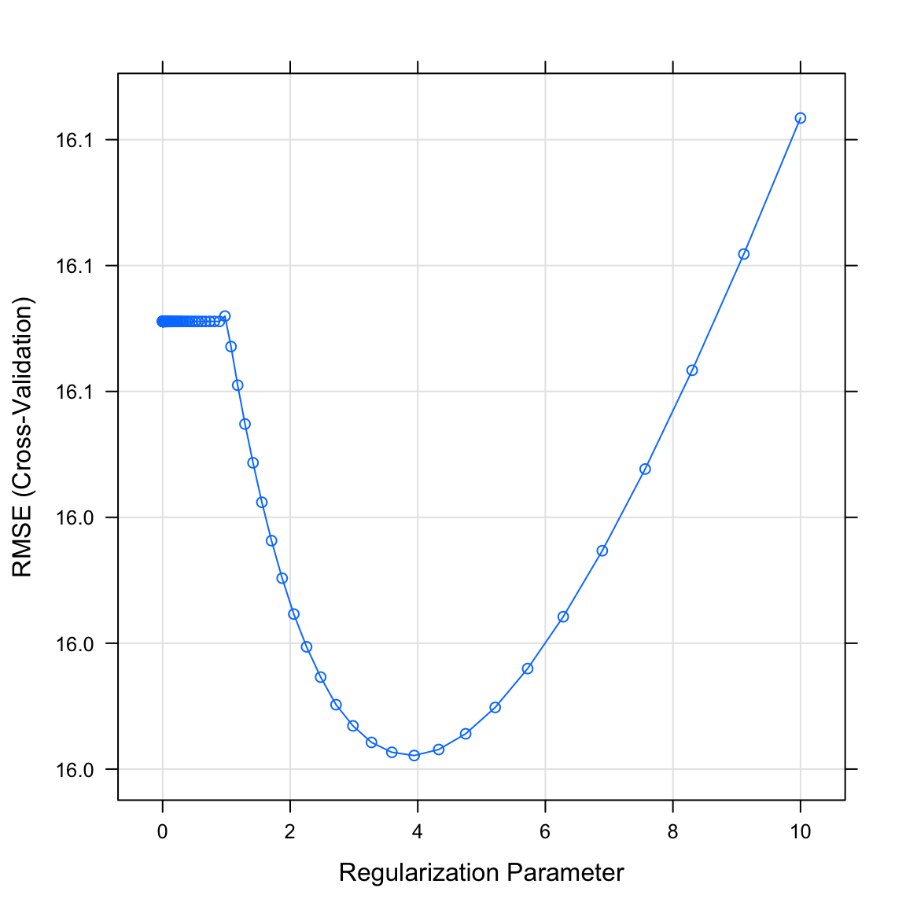

Optimization
|
Machine Learning with R The R Bootcamp |

|

from xkcd.com
Overview
By the end of this practical you will know how to:
- Use cross-validation to select optimal model tuning parameters for decision trees and random forests.
- Compare ‘standard’ regression with lasso and ridge penalised regression.
Tasks
A - Setup
Open your
TheRBootcampR project.Open a new R script. At the top of the script, using comments, write your name and the date.
## NAME
## DATE
## Optimizing practicalSave the script as a new file called
Optimization_practical.Rin the2_Codefolder.Using
library()load the packagestidyverse,caret,party,partykit.
# Load packages necessary for this script
library(tidyverse)
library(caret)
library(party)
library(partykit)B - Load the graduation data
- You will again begin by analyzing the graduation data. Read in the data sets
graduation_train.csvandgraduation_test.csvand convert all character to factors.
# Read college data
college_train <- read_csv(file = "1_Data/college_train.csv")
college_test <- read_csv(file = "1_Data/college_test.csv")
# Convert all character features to factor
college_train <- college_train %>%
mutate_if(is.character, factor)
college_test <- college_test %>%
mutate_if(is.character, factor)C - Setup trainControl
- Now, you finally make use of the train control object by specifying 10-fold cross-validation as the preferred optimization method in an object called
ctrl_cv. Specifically:
- set
method = "cv"to specify cross validation. - set
number = 10to specify 10 folds.
# Use 10-fold cross validation
ctrl_cv <- trainControl(method = "XX",
number = XX) # Use 10-fold cross validation
ctrl_cv <- trainControl(method = "cv",
number = 10) D - Regularized regression
Standard regression
- Begin by fitting a standard regression model predicting
Grad.Rateas a function of all other features. Specifically:
- set the formula to
Grad.Rate ~ .. - set the data to
college_train. - set the method to
"glm"for standard regression. - set the train control argument to
ctrl_cv.
# Standard regression
graduation_glm <- train(form = XX ~ .,
data = XX,
method = "XX",
trControl = XX)# Standard regression
graduation_glm <- train(form = Grad.Rate ~ .,
data = college_train,
method = "glm",
trControl = ctrl_cv)- What were your final regression model coefficients?
# Show final model
graduation_glm$finalModel
Call: NULL
Coefficients:
(Intercept) PrivateYes Apps Accept Enroll Top10perc
26.320597 2.075873 0.001243 -0.000965 0.006891 -0.100378
Top25perc F.Undergrad P.Undergrad Outstate Room.Board Books
0.289288 -0.001247 -0.001296 0.001436 0.001294 -0.000276
Personal PhD Terminal S.F.Ratio perc.alumni Expend
-0.001756 0.060658 -0.066585 0.330961 0.195720 -0.000369
Degrees of Freedom: 499 Total (i.e. Null); 482 Residual
Null Deviance: 189000
Residual Deviance: 121000 AIC: 4200Ridge regression
- Before you can fit a regularized regression model like ridge regression, you need to determine a vector of lambda penalty values that the cross validation procedure will evaluate. Using the code below, create a vector called
lambda_veccontaining 100 values spanning a range from very close to0up to10.
# Vector of lambda values to try
lambda_vec <- 10 ^ (seq(-3, 1, length = 100))- Using
train(), fit a ridge regression model predictingGrad.Rateas a function of all features. This time make use of thetuneGrid, which will take adata.framespecifying the sets of tuning parameters to consider during cross validation. In addition toalpha = 0, which specifies a ridge penalty, addlambda = lambda_vec. Also, don’t forget to"center"and"scale"when using regularization.
# Ridge regression
graduation_ridge <- train(form = XX ~ .,
data = XX,
method = "XX",
trControl = XX,
preProcess = c("XX", "XX"), # Standardize
tuneGrid = data.frame(alpha = 0, # Ridge penalty
lambda = XX)) # Penalty weight# Ridge regression
graduation_ridge <- train(form = Grad.Rate ~ .,
data = college_train,
method = "glmnet",
trControl = ctrl_cv,
preProcess = c("center", "scale"), # Standardise
tuneGrid = data.frame(alpha = 0, # Ridge penalty
lambda = lambda_vec)) # Penalty weight- Print your
graduation_ridgeobject. Which lambda was selected as best performing?
graduation_ridgeglmnet
500 samples
17 predictor
Pre-processing: centered (17), scaled (17)
Resampling: Cross-Validated (10 fold)
Summary of sample sizes: 449, 449, 451, 451, 450, 449, ...
Resampling results across tuning parameters:
lambda RMSE Rsquared MAE
0.00100 16.1 0.330 12.8
0.00110 16.1 0.330 12.8
0.00120 16.1 0.330 12.8
0.00132 16.1 0.330 12.8
0.00145 16.1 0.330 12.8
0.00159 16.1 0.330 12.8
0.00175 16.1 0.330 12.8
0.00192 16.1 0.330 12.8
0.00210 16.1 0.330 12.8
0.00231 16.1 0.330 12.8
0.00254 16.1 0.330 12.8
0.00278 16.1 0.330 12.8
0.00305 16.1 0.330 12.8
0.00335 16.1 0.330 12.8
0.00368 16.1 0.330 12.8
0.00404 16.1 0.330 12.8
0.00443 16.1 0.330 12.8
0.00486 16.1 0.330 12.8
0.00534 16.1 0.330 12.8
0.00586 16.1 0.330 12.8
0.00643 16.1 0.330 12.8
0.00705 16.1 0.330 12.8
0.00774 16.1 0.330 12.8
0.00850 16.1 0.330 12.8
0.00933 16.1 0.330 12.8
0.01024 16.1 0.330 12.8
0.01123 16.1 0.330 12.8
0.01233 16.1 0.330 12.8
0.01353 16.1 0.330 12.8
0.01485 16.1 0.330 12.8
0.01630 16.1 0.330 12.8
0.01789 16.1 0.330 12.8
0.01963 16.1 0.330 12.8
0.02154 16.1 0.330 12.8
0.02364 16.1 0.330 12.8
0.02595 16.1 0.330 12.8
0.02848 16.1 0.330 12.8
0.03126 16.1 0.330 12.8
0.03430 16.1 0.330 12.8
0.03765 16.1 0.330 12.8
0.04132 16.1 0.330 12.8
0.04535 16.1 0.330 12.8
0.04977 16.1 0.330 12.8
0.05462 16.1 0.330 12.8
0.05995 16.1 0.330 12.8
0.06579 16.1 0.330 12.8
0.07221 16.1 0.330 12.8
0.07925 16.1 0.330 12.8
0.08697 16.1 0.330 12.8
0.09545 16.1 0.330 12.8
0.10476 16.1 0.330 12.8
0.11498 16.1 0.330 12.8
0.12619 16.1 0.330 12.8
0.13849 16.1 0.330 12.8
0.15199 16.1 0.330 12.8
0.16681 16.1 0.330 12.8
0.18307 16.1 0.330 12.8
0.20092 16.1 0.330 12.8
0.22051 16.1 0.330 12.8
0.24201 16.1 0.330 12.8
0.26561 16.1 0.330 12.8
0.29151 16.1 0.330 12.8
0.31993 16.1 0.330 12.8
0.35112 16.1 0.330 12.8
0.38535 16.1 0.330 12.8
0.42292 16.1 0.330 12.8
0.46416 16.1 0.330 12.8
0.50941 16.1 0.330 12.8
0.55908 16.1 0.330 12.8
0.61359 16.1 0.330 12.8
0.67342 16.1 0.330 12.8
0.73907 16.1 0.330 12.8
0.81113 16.1 0.330 12.8
0.89022 16.1 0.330 12.8
0.97701 16.1 0.330 12.8
1.07227 16.1 0.330 12.8
1.17681 16.1 0.330 12.8
1.29155 16.0 0.330 12.8
1.41747 16.0 0.330 12.8
1.55568 16.0 0.330 12.8
1.70735 16.0 0.330 12.8
1.87382 16.0 0.330 12.8
2.05651 16.0 0.330 12.8
2.25702 16.0 0.330 12.7
2.47708 16.0 0.330 12.8
2.71859 16.0 0.330 12.8
2.98365 16.0 0.330 12.8
3.27455 16.0 0.330 12.8
3.59381 16.0 0.330 12.8
3.94421 16.0 0.330 12.8
4.32876 16.0 0.330 12.8
4.75081 16.0 0.330 12.8
5.21401 16.0 0.330 12.8
5.72237 16.0 0.330 12.8
6.28029 16.0 0.329 12.8
6.89261 16.0 0.329 12.8
7.56463 16.0 0.329 12.8
8.30218 16.1 0.329 12.8
9.11163 16.1 0.328 12.9
10.00000 16.1 0.328 12.9
Tuning parameter 'alpha' was held constant at a value of 0
RMSE was used to select the optimal model using the smallest value.
The final values used for the model were alpha = 0 and lambda = 3.94.- Plot your
graduation_ridgeobject. What do you see? Does this match the plot match the value identified in the previous task?
# Plot graduation_ridge object
plot(XX)plot(graduation_ridge)
- What were your final regression model coefficients for the best lambda value? Find them by running the following code.
# Get coefficients from best lambda value
coef(graduation_ridge$finalModel,
graduation_ridge$bestTune$lambda)18 x 1 sparse Matrix of class "dgCMatrix"
1
(Intercept) 65.3853
PrivateYes 1.5221
Apps 1.4296
Accept 1.1152
Enroll 0.6637
Top10perc 1.0367
Top25perc 3.0499
F.Undergrad -0.9730
P.Undergrad -1.8279
Outstate 3.6625
Room.Board 1.6135
Books -0.0918
Personal -1.2850
PhD 0.6006
Terminal -0.0601
S.F.Ratio 0.8763
perc.alumni 2.2782
Expend -0.6340How do these coefficients compare to what you found in regular regression? Are they similar? Could the differences have something to do with the applied scaling?
Using
predict()save the fitted values ofgraduation_glmobject asglm_fit.
# Save fitted value
glm_fit <- predict(graduation_glm)Lasso regression
- Now fit a lasso regression model predicting
Grad.Rateas a function of all features. Setalpha = 1for the Lasso penalty and addlambda = lambda_vecas above.
# Lasso regression
graduation_lasso <- train(form = XX ~ .,
data = XX,
method = "XX",
trControl = XX,
preProcess = c("XX", "XX"), # Standardise
tuneGrid = data.frame(alpha = XX, # Lasso penalty
lambda = XX)) # Penalty weight# Lasso regression
graduation_lasso <- train(form = Grad.Rate ~ .,
data = college_train,
method = "glmnet",
trControl = ctrl_cv,
preProcess = c("center", "scale"), # Standardise
tuneGrid = data.frame(alpha = 1, # Lasso penalty
lambda = lambda_vec)) # Penalty weight- Print your
graduation_lassoobject. Which lambda was selected as best performing?
graduation_lassoglmnet
500 samples
17 predictor
Pre-processing: centered (17), scaled (17)
Resampling: Cross-Validated (10 fold)
Summary of sample sizes: 448, 449, 451, 448, 450, 451, ...
Resampling results across tuning parameters:
lambda RMSE Rsquared MAE
0.00100 16.1 0.3207 13.0
0.00110 16.1 0.3207 13.0
0.00120 16.1 0.3207 13.0
0.00132 16.1 0.3207 13.0
0.00145 16.1 0.3207 13.0
0.00159 16.1 0.3207 13.0
0.00175 16.1 0.3207 13.0
0.00192 16.1 0.3207 13.0
0.00210 16.1 0.3207 13.0
0.00231 16.1 0.3207 13.0
0.00254 16.1 0.3207 13.0
0.00278 16.1 0.3207 13.0
0.00305 16.1 0.3207 13.0
0.00335 16.1 0.3207 13.0
0.00368 16.1 0.3207 13.0
0.00404 16.1 0.3207 13.0
0.00443 16.1 0.3207 13.0
0.00486 16.1 0.3207 13.0
0.00534 16.1 0.3207 13.0
0.00586 16.1 0.3208 13.0
0.00643 16.1 0.3208 13.0
0.00705 16.1 0.3208 13.0
0.00774 16.1 0.3209 13.0
0.00850 16.1 0.3209 13.0
0.00933 16.1 0.3210 13.0
0.01024 16.1 0.3210 13.0
0.01123 16.1 0.3211 13.0
0.01233 16.1 0.3211 13.0
0.01353 16.1 0.3212 13.0
0.01485 16.1 0.3212 13.0
0.01630 16.1 0.3213 13.0
0.01789 16.1 0.3214 13.0
0.01963 16.1 0.3215 13.0
0.02154 16.1 0.3217 13.0
0.02364 16.1 0.3218 13.0
0.02595 16.1 0.3220 12.9
0.02848 16.1 0.3221 12.9
0.03126 16.1 0.3223 12.9
0.03430 16.1 0.3225 12.9
0.03765 16.1 0.3227 12.9
0.04132 16.1 0.3230 12.9
0.04535 16.1 0.3233 12.9
0.04977 16.1 0.3236 12.9
0.05462 16.1 0.3239 12.9
0.05995 16.1 0.3242 12.9
0.06579 16.1 0.3244 12.9
0.07221 16.1 0.3245 12.9
0.07925 16.1 0.3244 12.9
0.08697 16.1 0.3242 12.9
0.09545 16.1 0.3241 12.9
0.10476 16.1 0.3238 12.9
0.11498 16.1 0.3236 12.9
0.12619 16.1 0.3234 12.9
0.13849 16.1 0.3233 12.9
0.15199 16.1 0.3232 12.9
0.16681 16.1 0.3237 12.9
0.18307 16.1 0.3243 12.9
0.20092 16.1 0.3249 12.9
0.22051 16.0 0.3254 12.9
0.24201 16.0 0.3258 12.9
0.26561 16.0 0.3259 12.9
0.29151 16.0 0.3258 12.9
0.31993 16.0 0.3255 12.9
0.35112 16.0 0.3250 12.9
0.38535 16.0 0.3243 12.9
0.42292 16.1 0.3237 12.9
0.46416 16.1 0.3231 13.0
0.50941 16.1 0.3224 13.0
0.55908 16.1 0.3214 13.0
0.61359 16.1 0.3202 13.0
0.67342 16.1 0.3190 13.0
0.73907 16.1 0.3179 13.0
0.81113 16.1 0.3171 13.0
0.89022 16.1 0.3162 13.1
0.97701 16.2 0.3150 13.1
1.07227 16.2 0.3132 13.1
1.17681 16.2 0.3114 13.2
1.29155 16.2 0.3101 13.2
1.41747 16.3 0.3090 13.2
1.55568 16.3 0.3078 13.3
1.70735 16.3 0.3065 13.3
1.87382 16.4 0.3052 13.3
2.05651 16.4 0.3040 13.4
2.25702 16.4 0.3033 13.4
2.47708 16.5 0.3029 13.5
2.71859 16.5 0.3024 13.5
2.98365 16.6 0.3016 13.6
3.27455 16.7 0.3005 13.6
3.59381 16.8 0.2996 13.7
3.94421 16.9 0.2996 13.8
4.32876 17.0 0.2997 13.9
4.75081 17.1 0.2994 14.0
5.21401 17.3 0.2983 14.2
5.72237 17.5 0.2956 14.4
6.28029 17.8 0.2892 14.6
6.89261 18.1 0.2785 14.8
7.56463 18.4 0.2680 15.1
8.30218 18.7 0.2673 15.4
9.11163 19.1 0.2681 15.7
10.00000 19.4 0.0466 16.0
Tuning parameter 'alpha' was held constant at a value of 1
RMSE was used to select the optimal model using the smallest value.
The final values used for the model were alpha = 1 and lambda = 0.292.- Plot your
graduation_lassoobject. What do you see? Does this match the plot match the value identified in the previous task?
# Plot model object
plot(XX)plot(graduation_lasso)- What were your final regression model coefficients for the best lambda value? Find them by running the following code.
# Get coefficients from best lambda value
coef(graduation_lasso$finalModel,
graduation_lasso$bestTune$lambda)18 x 1 sparse Matrix of class "dgCMatrix"
1
(Intercept) 65.385
PrivateYes 0.781
Apps 2.145
Accept .
Enroll .
Top10perc .
Top25perc 4.138
F.Undergrad .
P.Undergrad -1.874
Outstate 5.393
Room.Board 1.156
Books .
Personal -1.172
PhD .
Terminal .
S.F.Ratio 0.919
perc.alumni 2.171
Expend -0.830- How do these coefficients compare to what you found for the regular and ridge regression? Have some features been set to 0?
Evaluate performance
- Store the training data and test data criterion (
Grad.Rate) ascriterion_trainandcriterion_test.
# store criteria
criterion_train <- college_train$Grad.Rate
criterion_test <- college_test$Grad.Rates 16. Using predict(), save the fitted values of your models as glm_fit, ridge_fit, and lasso_fit.
# store fitted values
glm_fit <- predict(graduation_glm)
ridge_fit <- predict(graduation_ridge)
lasso_fit <- predict(graduation_lasso)- Using
postResampleevaluate the fitting performance of your models. Which model has the best performance in fitting the training data?
# evaluate fit
postResample(pred = glm_fit, obs = criterion_train) RMSE Rsquared MAE
15.559 0.359 12.443 postResample(pred = ridge_fit, obs = criterion_train) RMSE Rsquared MAE
15.716 0.348 12.578 postResample(pred = lasso_fit, obs = criterion_train) RMSE Rsquared MAE
15.689 0.349 12.589 - Using
predict()andnewdata = college_test, save the predicted values of your models asglm_pred,ridge_pred, andlasso_pred.
# store predicted values
glm_pred <- predict(graduation_glm, newdata = college_test)
ridge_pred <- predict(graduation_ridge, newdata = college_test)
lasso_pred <- predict(graduation_lasso, newdata = college_test)- Using
postResampleevaluate the prediction performance of your models. Which model has the best performance in predicting the test data? Did the regularized regressions outperform the unregularized one?
# evaluate fit
postResample(pred = glm_pred, obs = criterion_test) RMSE Rsquared MAE
16.412 0.305 13.204 postResample(pred = ridge_pred, obs = criterion_test) RMSE Rsquared MAE
15.968 0.341 12.975 postResample(pred = lasso_pred, obs = criterion_test) RMSE Rsquared MAE
16.166 0.323 13.050 E - Trees
Decision tree
- It’s time to see what parameter tuning can do for decision trees and random forests. To do this, first, determine a vector of possible values for the complexity parameter
cpof decision trees. To this end, using the code below, create a vector calledcp_vecwhich contains 100 values between 0 and .2.
# Determine possible values for cp
cp_vec <- seq(from = 0, to = .2, length = 100)- Using
train(), fit a decision tree model calledgraduation_rpartpredictingGrad.Rateby all features. Again, assign a data frame totuneGridspecifying the possible tuning parameters, i.e.,cp = cp_vec.
# Decision tree
graduation_rpart <- train(form = Grad.part ~ .,
data = XX,
method = "XX",
trControl = XX,
tuneGrid = data.frame(cp = XX))# Decision tree
graduation_rpart <- train(form = Grad.Rate ~ .,
data = college_train,
method = "rpart",
trControl = ctrl_cv,
tuneGrid = data.frame(cp = cp_vec))- Print your
graduation_rpartobject. Whichcpwas selected as best performing?
graduation_rpartCART
500 samples
17 predictor
No pre-processing
Resampling: Cross-Validated (10 fold)
Summary of sample sizes: 449, 450, 451, 449, 450, 451, ...
Resampling results across tuning parameters:
cp RMSE Rsquared MAE
0.00000 19.7 0.150 15.7
0.00202 19.7 0.152 15.7
0.00404 19.5 0.163 15.4
0.00606 19.5 0.152 15.4
0.00808 19.1 0.155 15.2
0.01010 18.8 0.160 15.1
0.01212 18.5 0.175 14.8
0.01414 18.1 0.195 14.5
0.01616 18.0 0.191 14.5
0.01818 17.7 0.205 14.4
0.02020 17.4 0.225 14.2
0.02222 17.2 0.237 14.0
0.02424 17.2 0.241 14.0
0.02626 17.2 0.240 14.0
0.02828 17.2 0.240 14.0
0.03030 17.1 0.246 13.9
0.03232 17.1 0.240 14.0
0.03434 17.3 0.224 14.1
0.03636 17.3 0.224 14.1
0.03838 17.5 0.211 14.3
0.04040 17.5 0.208 14.3
0.04242 17.5 0.205 14.2
0.04444 17.6 0.199 14.3
0.04646 17.7 0.191 14.4
0.04848 17.7 0.191 14.4
0.05051 17.6 0.200 14.2
0.05253 17.6 0.200 14.2
0.05455 17.6 0.200 14.2
0.05657 17.5 0.203 14.2
0.05859 17.5 0.203 14.2
0.06061 17.5 0.203 14.2
0.06263 17.5 0.203 14.2
0.06465 17.5 0.203 14.2
0.06667 17.5 0.203 14.2
0.06869 17.5 0.203 14.2
0.07071 17.5 0.203 14.2
0.07273 17.5 0.203 14.2
0.07475 17.5 0.203 14.2
0.07677 17.5 0.203 14.2
0.07879 17.5 0.203 14.2
0.08081 17.5 0.203 14.2
0.08283 17.5 0.203 14.2
0.08485 17.5 0.203 14.2
0.08687 17.5 0.203 14.2
0.08889 17.5 0.203 14.2
0.09091 17.5 0.203 14.2
0.09293 17.5 0.203 14.2
0.09495 17.5 0.203 14.2
0.09697 17.5 0.203 14.2
0.09899 17.5 0.203 14.2
0.10101 17.5 0.203 14.2
0.10303 17.5 0.203 14.2
0.10505 17.5 0.203 14.2
0.10707 17.5 0.203 14.2
0.10909 17.5 0.203 14.2
0.11111 17.5 0.203 14.2
0.11313 17.5 0.203 14.2
0.11515 17.5 0.203 14.2
0.11717 17.5 0.203 14.2
0.11919 17.5 0.203 14.2
0.12121 17.5 0.203 14.2
0.12323 17.5 0.203 14.2
0.12525 17.5 0.203 14.2
0.12727 17.5 0.203 14.2
0.12929 17.5 0.203 14.2
0.13131 17.5 0.203 14.2
0.13333 17.5 0.203 14.2
0.13535 17.5 0.203 14.2
0.13737 17.5 0.203 14.2
0.13939 17.5 0.203 14.2
0.14141 17.5 0.203 14.2
0.14343 17.5 0.203 14.2
0.14545 17.5 0.203 14.2
0.14747 17.5 0.203 14.2
0.14949 17.5 0.203 14.2
0.15152 17.5 0.203 14.2
0.15354 17.5 0.203 14.2
0.15556 17.5 0.203 14.2
0.15758 17.5 0.203 14.2
0.15960 17.5 0.203 14.2
0.16162 17.5 0.203 14.2
0.16364 17.5 0.203 14.2
0.16566 17.5 0.203 14.2
0.16768 17.5 0.203 14.2
0.16970 17.5 0.203 14.2
0.17172 17.5 0.203 14.2
0.17374 17.5 0.203 14.2
0.17576 17.5 0.203 14.2
0.17778 17.5 0.203 14.2
0.17980 17.5 0.203 14.2
0.18182 17.5 0.203 14.2
0.18384 17.5 0.203 14.2
0.18586 17.5 0.203 14.2
0.18788 17.5 0.203 14.2
0.18990 17.9 0.180 14.5
0.19192 17.9 0.180 14.5
0.19394 17.9 0.180 14.5
0.19596 17.9 0.180 14.5
0.19798 17.9 0.180 14.5
0.20000 18.4 0.149 14.9
RMSE was used to select the optimal model using the smallest value.
The final value used for the model was cp = 0.0303.- Plot your
graduation_rpartobject. What do you see? Does this match the plot match the value identified in the previous task?
plot(graduation_rpart)- Plot your final decision tree using the following code. Do you find the model sensible?
# Visualise your trees
plot(as.party(graduation_rpart$finalModel)) - How do the nodes in the tree compare to those in the ridge or lasso models?
Random forest
- Now onto fitting a random forest. Using the code below, create a vector called
mtry_veccontaining values from 1 to 5, the tuning parameter candidates for our random forest.
# mtry candidates
mtry_vec <- 1:5- Fit a random forest model predicting
Grad.Rateas a function of all features. Make sure to usemtry = mtry_vecwithin the data frame specifying thetuneGrid. This one might take a bit longer than usual.
# Random forest
graduation_rf <- train(form = XX ~ .,
data = XX,
method = "XX",
trControl = XX,
tuneGrid = data.frame(mtry = XX))# Random forest
graduation_rf <- train(form = Grad.Rate ~ .,
data = college_train,
method = "rf",
trControl = ctrl_cv,
tuneGrid = data.frame(mtry = mtry_vec))- Print your
graduation_rfobject. What do you see? Whichmtrywas selected as best performing?
graduation_rfRandom Forest
500 samples
17 predictor
No pre-processing
Resampling: Cross-Validated (10 fold)
Summary of sample sizes: 449, 449, 450, 451, 450, 449, ...
Resampling results across tuning parameters:
mtry RMSE Rsquared MAE
1 16.2 0.316 13.2
2 16.2 0.313 13.1
3 16.2 0.316 13.1
4 16.1 0.318 13.0
5 16.3 0.308 13.1
RMSE was used to select the optimal model using the smallest value.
The final value used for the model was mtry = 4.- Plot your
graduation_rfobject. What do you see? Does this match the plot match the value identified in the previous task?
plot(graduation_rf)Evaluate performance
- Using
predict(), save the fitted values of your tree models asrpart_fitandrf_fit.
# store fitted values
rpart_fit <- predict(graduation_rpart)
rf_fit <- predict(graduation_rf)- Using
postResampleevaluate the fitting performance of your models. Which model has the best performance in fitting the training data? If you like compare to the regression models of the previous section.
# evaluate fit
postResample(pred = rpart_fit, obs = criterion_train) RMSE Rsquared MAE
16.358 0.291 13.268 postResample(pred = rf_fit, obs = criterion_train) RMSE Rsquared MAE
6.935 0.925 5.481 - Using
predict()andnewdata = college_test, save the predicted values of your models asrpart_pred, andrf_pred.
# store predicted values
rpart_pred <- predict(graduation_rpart, newdata = college_test)
rf_pred <- predict(graduation_rf, newdata = college_test)- Using
postResampleevaluate the prediction performance of your models. Which model has the best performance in predicting the test data? Did the tree models outperform the regularized regressions?
# evaluate fit
postResample(pred = rpart_pred, obs = criterion_test) RMSE Rsquared MAE
17.191 0.239 13.853 postResample(pred = rf_pred, obs = criterion_test) RMSE Rsquared MAE
15.762 0.364 12.708 X - Challenges: Explore tuning parameter grids
- The name
tuneGridalready suggests that one may want to vary multiple tuning parameters at the same time. A handy function helping in this isexpand.grid(), which will produce all compbinations of values of the vectors supplied as its arguments. Try, e.g.,expand.grid(a = c(1, 2), b = c(2, 3, 4)). The template below shows you how you can useexpand.grid()to specify multiple tuning parameters at the same time.
model <- train(form = XX ~ .,
data = XX,
method = "XX",
trControl = XX,
preProcess = c("XX", "XX"),
tuneGrid = expand.grid(parameter_1 = XX,
parameter_2 = XX)) Run and evaluate a regularized regression that uses cross validation to not only identify the best value for
lambdabut also the best value foralpha, e.g., usingalpha = c(0, .5, 1). This way you can let the procedure decide whether to use ridge, lasso or both.Run and evaluate a random forest while tuning not only
mtrybut alsontree, e.g., usingntree = c(100,500,1000). Tip: avoid high values forntreeormtry.As done in the previous sessions try predicting
Privaterather thanGrad.Rate. Note, this may require a different range of lambda values. You’ll figure it out.
Examples
# Model optimization with Regression
# Step 0: Load packages-----------
library(tidyverse) # Load tidyverse for dplyr and tidyr
library(caret) # For ML mastery
library(partykit) # For decision trees
library(party) # For decision trees
# Step 1: Load, clean, and explore data ----------------------
# training data
data_train <- read_csv("1_Data/diamonds_train.csv")
# test data
data_test <- read_csv("1_Data/diamonds_test.csv")
# Convert all characters to factor
# Some ML models require factors
data_train <- data_train %>%
mutate_if(is.character, factor)
data_test <- data_test %>%
mutate_if(is.character, factor)
# Explore training data
data_train # Print the dataset
View(data_train) # Open in a new spreadsheet-like window
dim(data_train) # Print dimensions
names(data_train) # Print the names
# Define criterion_train
criterion_train <- data_train$price
criterion_test <- data_test$price
# Step 2: Define training control parameters -------------
# Use 10-fold cross validation
ctrl_cv <- trainControl(method = "cv",
number = 10)
# Step 3: Train models: -----------------------------
# Normal Regression --------------------------
price_glm <- train(form = price ~ carat + depth + table + x + y,
data = data_train,
method = "glm",
trControl = ctrl_cv)
# Print key results
price_glm
# Coefficients
coef(price_glm$finalModel)
# Lasso --------------------------
# Vector of lambda values to try
lambda_vec <- 10 ^ seq(-3, 3, length = 100)
price_lasso <- train(form = price ~ carat + depth + table + x + y,
data = data_train,
method = "glmnet",
trControl = ctrl_cv,
preProcess = c("center", "scale"), # Standardise
tuneGrid = data.frame(alpha = 1, # Lasso
lambda = lambda_vec))
# Print key results
price_lasso
# Plot regularisation parameter versus error
plot(price_lasso)
# Print best regularisation parameter
price_lasso$bestTune$lambda
# Get coefficients from best lambda value
coef(price_lasso$finalModel,
price_lasso$bestTune$lambda)
# Ridge --------------------------
# Vector of lambda values to try
lambda_vec <- 10 ^ seq(-3, 3, length = 100)
price_ridge <- train(form = price ~ carat + depth + table + x + y,
data = data_train,
method = "glmnet",
trControl = ctrl_cv,
preProcess = c("center", "scale"), # Standardise
tuneGrid = data.frame(alpha = 0, # Ridge penalty
lambda = lambda_vec))
# Print key results
price_ridge
# Plot regularisation parameter versus error
plot(price_ridge)
# Print best regularisation parameter
price_ridge$bestTune$lambda
# Get coefficients from best lambda value
coef(price_ridge$finalModel,
price_ridge$bestTune$lambda)
# Decision Trees --------------------------
# Vector of cp values to try
cp_vec <- seq(0, .1, length = 100)
price_rpart <- train(form = price ~ carat + depth + table + x + y,
data = data_train,
method = "rpart",
trControl = ctrl_cv,
tuneGrid = data.frame(cp = cp_vec))
# Print key results
price_rpart
# Plot complexity parameter vs. error
plot(price_rpart)
# Print best complexity parameter
price_rpart$bestTune$cpDatasets
| File | Rows | Columns |
|---|---|---|
| college_train.csv | 50 | 20 |
| college_test.csv | 213 | 20 |
| college_train.csv | 500 | 18 |
| college_test.csv | 277 | 18 |
| house_train.csv | 5000 | 21 |
| house_test.csv | 1000 | 21 |
The
college_trainandcollege_testdata are taken from theCollegedataset in theISLRpackage. They contain statistics for a large number of US Colleges from the 1995 issue of US News and World Report.The
house_trainandhouse_testdata come from https://www.kaggle.com/harlfoxem/housesalesprediction
Variable description of college_train and college_test
| Name | Description |
|---|---|
Private |
A factor with levels No and Yes indicating private or public university. |
Apps |
Number of applications received. |
Accept |
Number of applications accepted. |
Enroll |
Number of new students enrolled. |
Top10perc |
Pct. new students from top 10% of H.S. class. |
Top25perc |
Pct. new students from top 25% of H.S. class. |
F.Undergrad |
Number of fulltime undergraduates. |
P.Undergrad |
Number of parttime undergraduates. |
Outstate |
Out-of-state tuition. |
Room.Board |
Room and board costs. |
Books |
Estimated book costs. |
Personal |
Estimated personal spending. |
PhD |
Pct. of faculty with Ph.D.’s. |
Terminal |
Pct. of faculty with terminal degree. |
S.F.Ratio |
Student/faculty ratio. |
perc.alumni |
Pct. alumni who donate. |
Expend |
Instructional expenditure per student. |
Grad.Rate |
Graduation rate. |
Variable description of house_train and house_test
| Name | Description |
|---|---|
price |
Price of the house in $. |
bedrooms |
Number of bedrooms. |
bathrooms |
Number of bathrooms. |
sqft_living |
Square footage of the home. |
sqft_lot |
Square footage of the lot. |
floors |
Total floors (levels) in house. |
waterfront |
House which has a view to a waterfront. |
view |
Has been viewed. |
condition |
How good the condition is (Overall). |
grade |
Overall grade given to the housing unit, based on King County grading system. |
sqft_above |
Square footage of house apart from basement. |
sqft_basement |
Square footage of the basement. |
yr_built |
Built Year. |
yr_renovated |
Year when house was renovated. |
zipcode |
Zip code. |
lat |
Latitude coordinate. |
long |
Longitude coordinate. |
sqft_living15 |
Living room area in 2015 (implies some renovations). This might or might not have affected the lotsize area. |
sqft_lot15 |
lot-size area in 2015 (implies some renovations). |
Functions
Packages
| Package | Installation |
|---|---|
tidyverse |
install.packages("tidyverse") |
caret |
install.packages("caret") |
partykit |
install.packages("partykit") |
party |
install.packages("party") |
Functions
| Function | Package | Description |
|---|---|---|
trainControl() |
caret |
Define modelling control parameters |
train() |
caret |
Train a model |
predict(object, newdata) |
stats |
Predict the criterion values of newdata based on object |
postResample() |
caret |
Calculate aggregate model performance in regression tasks |
confusionMatrix() |
caret |
Calculate aggregate model performance in classification tasks |
Resources
from github.com/rstudio